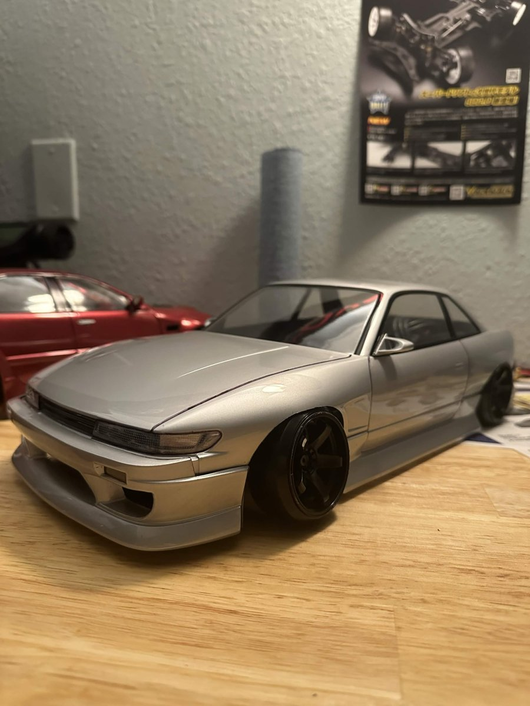

Body making

The other side of this hobby that I got very obsessed with is body making. RC drift bodies are clear polycarbonate shells that you cut out, paint, and detail yourself. Being able to customize and paint these shells to look very realistic, and exactly like the dream cars I would love to own or build in real scale, is just so fun and rewarding.
This is also where the low Japanese style I love really comes in. Getting the stance right with the wheels tucked and the body sitting low makes a huge difference in how real the car looks when it's sliding around the track.
How I usually do a body
- Wash the inside of the shell so the paint actually sticks.
- Mask off the windows and any spots that need a different color.
- Paint from the inside with polycarbonate paint so the shiny side faces out.
- Cut out the body and trim the wheel wells.
- Add the small details like lights, mirrors, stickers, and wheels.
My current bodies
- Red Kazama JZX110 Mark II: Candy red sedan with a vented hood and chrome wheels.
- Silver Nissan S13 Silvia: Clean and simple, sitting low on black five spoke wheels.
- Navy Mazda FC RX7: Big rear wing, a windshield banner, and silver wheels.
Next up: Kazama Auto JZX100 Chaser
The next body I'm working on is a replica of the Kazama Auto JZX100 Chaser livery. It has a white base with a purple to lime fade, torn edges, and grey ink splatter over everything. Right now I'm still deciding between the Addiction RC and the Pandora JZX100 shells before I start making the vector template for the livery.